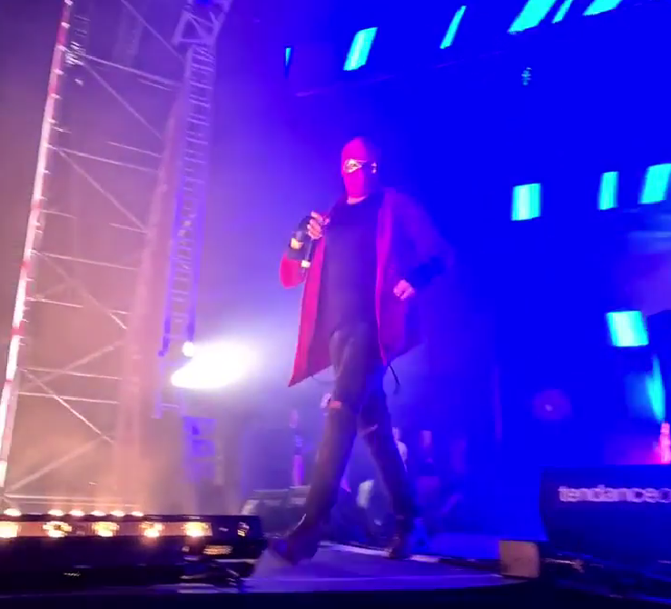

David Guetta

David Guetta est un artiste DJ mondialement connu notament pour ses titres Bad ou Titanium. David Guetta est né le 7 Novembre 1967 à Paris sous le nom de Pierre David Guetta. Il a pu faire de nombreux duo notament avec Zara Larson à l'occassion du championat d'europe en 2016. On peut aussi le retrouver dans des remix comme par exemple celui-ci comme on retrouve en dessous, un remix de la chanson Blue de Effiel 65, qu'il remixé avec Bebe Rexha.
Avicii

Avicii est un artiste DJ suédois, on lui doit les titres Hey Brother et Wainting for Love. Avicii est né le 8 septembre 1989 et est mort le 20 avril 2018 à 28 ans. La cause de son décès reste toujours flou 4 ans après. Sa famille évoquant un suicide alors que son manager n'a jamais comuniqué sur celle-ci. Ses musiques de type sont mondialement connus. On peut voir une de ses musiques ci-dessous, The nights sortie en 2014 juste avant The Day sortie elle en 2015.
Armim Van Buren

Armin Van Bureen est un Disck Jockey hollandais. Son titre le plus connu est Blah, Blah, Blah ,Blah un titre de style plutot éléctro. Armin van Bureen est né le 25 décembre 1976 à Leyde au Pays-Bas. Il a commençais sa carrière de DJ au club Nexus. Il est principalement inspiré du Disck Jockey français Jean-Michel Jarre on peut notament retrouvé certaines notes des chansons de Jean-Michel Jarre dans la chanson Blah Blah Blah Blah ce trouvant ci-dessous.
Alan Walker

Alan Walker est un artiste DJ autrefois connu sous le nom DJ Walkzz britanico-norvégien. Il est né le 24 août 1997 à Northampton en Angleterre. Alan Walker gagne en noteriété en 2015 avec son tube Faded un de ses titre les plus connus mais on peut notament cité le titre Ignite en featuring avec K-391. En 2014 il signe un contrat avec le label NoCopyrightSong (NCS).
Sound Of Legend

(Sound of Legend lors d'un concert en plein air à Granville (50))
Sound of Legend est un groupe de musique. Dont l'artiste principal se nome Zach, ce chanteur se fait passer pour un super héros. Il se fait passer pour un super héros jusqu'a sur scène car il se présente toujours masqué. Sound Of Legend n'ont pas crée de nouveau titre, il se contentent de remixé les titres existant on peut notament cité : Maniac sortit en 2022 ou encore I'm so excited sortit en octobre 2022 qu'on l'on peut écouté juste en dessous.